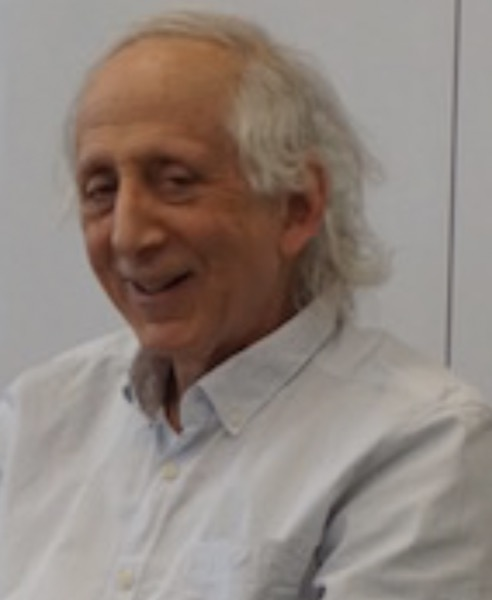
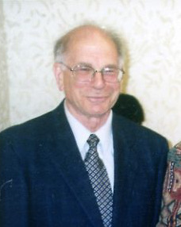
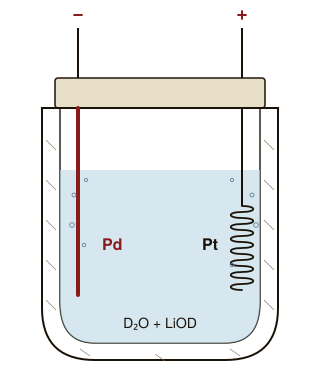

Bias Report / E-05
結果を見た後なら、誰もが予言者になれる。しかしその「分かっていた気がする」感覚が、私の記憶を静かに書き換えている。
ヘブライ大学の博士課程にいた Baruch Fischhoff が、結果を知った人ほど「それは予測可能だった」と判定することを実証する2本の論文を発表。この現象が学術的に「発見」された年。
この年の世界——4月、サイゴン陥落でベトナム戦争終結。春、ビル・ゲイツとポール・アレンが Microsoft を創業。
それから半世紀。この現象は、裁判、医療、投資、政治のあらゆる場面で、結果を見た人の判断を歪め続けている。
選挙の開票結果が出た夜。テレビの解説者は「実はこの兆候は事前からあって……」と滑らかに語りはじめる。試合が終わった後のスポーツ番組。ニュースの続報で事件の全容が明らかになった翌朝。誰もが、少しだけ予言者のような顔をして話す。
それは解説者だけの話ではない。私自身が、昨日までは迷っていたはずの選択について、結果を見た後ではこう思う——「最初から、こうなるって分かっていた気がする」。
結果を知った瞬間から、世界は別の形に書き換わる。私の記憶も含めて。
この記事では、ある人物の短い描写を結末を知らない状態で読んでもらい、その人の「その後」を2通り続けて伝えるたびに、同じ尺度で印象を入れ直してもらう。描写は一文字も変わらない。3回分の数字を並べて、結末情報があなたの読みを動かした幅を見る。
日本語には「事後諸葛(じごしょかつ)」という古い言葉がある。戦が終わってから参謀のように知ったふうな講評をする人を、三国志の諸葛亮になぞらえて揶揄した表現だ。結果を見てから語るのは容易い——この気配を、昔の人はすでに言葉にしていた。ただ、それがなぜ人類共通の癖なのかは、長らく宗教や処世の話として扱われてきた。実証科学の対象になるまで、あと二千年近くかかる。
潮目が変わるのは1970年代の前半だ。イスラエルの心理学者Daniel Kahnemanダニエル・カーネマン（1934-2024）行動経済学の創始者のひとり。2002年ノーベル経済学賞。Amos Tverskyとともに、人間の判断が「合理的でない」ことを実験で示し、経済学と心理学の接点を作った。と Amos Tversky が「人間の判断は、合理的ではなく、特定の癖で系統的に歪む」という観点から実験を重ねていた。その流れのヘブライ大学で、博士課程の一人の学生が、ある講義に座っていた。
学生の名はBaruch Fischhoffバルーク・フィッシュホフ1946年生まれ。後知恵バイアスの概念を1975年に実証した心理学者。現在はカーネギーメロン大学のハワード・ハインツ教授で、リスク認知・意思決定論の世界的権威。。演者は臨床心理学の大家 Paul Meehl。Meehlはその講義で、臨床家たちの常習的な癖を名指した。「患者の経過が明らかになった後、医師たちはほぼ例外なく、最初からその診断に確信があったと感じている。結果を見てから、自分の過去の判断を書き換えているのだ」——Fischhoff はその一言を、博士論文の入口に据えることにした。
彼が設計した実験はこうだ。19世紀初頭のグルカ戦争グルカ戦争（1814-1816）英領インド会社軍とネパール(ゴルカ王国)の間の戦争。現代日本ではほぼ知られておらず、結末を知らない被験者の「予想」を取るには理想的な題材だった。の記述を 5 群の被験者に読ませる。ある群には結末を伏せ、別の群にはそれぞれ異なる「結末」を事実として教える——「英軍の勝利」「ネパールの勝利」「和平による膠着」など。そして全員に、各結末が起きる確率を見積もらせた。結末を教えられた群の確率判定は、その結末が最も高くなった。しかも、自分の判定が結末情報に影響されたとは思っていなかった。被験者たちは、資料そのものからその結論を導いたと信じきっていた。
この現象は1975年の二本の論文で学術的に定位された。Fischhoffはこれを「hindsight bias」と名付け、別論文でcreeping determinismcreeping determinism「忍び寄る決定論」。Fischhoffの造語で、結果を知った後で、その結果が起きるしかなかったかのように見えてくる感覚を指す。別の結末もありえた、という感覚が失われる。——忍び寄る決定論——と呼んだ。結果を知った瞬間、別の未来があり得たはずだという感覚が、私たちから静かに剥がれていく。
同じ年、Fischhoff は学部生の Ruth Beyth と共同で、もう一つの有名な実験を行っている。1972年のニクソン米大統領の中国訪問・ソ連訪問の前に、学生に「首脳会談で具体的な合意文書が出る確率は?」「毛沢東は面会に応じる確率は?」といった項目を多数予測させた。訪問後、同じ学生たちに当時の自分の予測値を思い出してもらうと、ほぼ全員が、実際に起きた事象については自分の予測を高く、起きなかった事象については低く記憶していた。記録は書き換わっていないのに、記憶は書き換わっていた。論文タイトルは「I knew it would happen(そうなると思っていた)」。後知恵バイアスを最も鮮やかに可視化した設計として、50年経った今も研究の出発点として引用される。
1972年2月21日、北京。冷戦下で敵対してきた米中の首脳、ニクソンと毛沢東が初めて顔を合わせた。訪問の数週間前、学生たちはヘブライ大学でこの会談がどう進むかについて何十項目もの確率を書き残していた。訪問後、彼らに当時の自分の答えを思い出してもらうと、実際に起きた方向へ記憶は静かに寄っていた。写真:National Archives and Records Administration(パブリックドメイン)。
不思議なのは、この「記憶の寄り」を、当人は一切自覚できないことだ。自分は中立に思い出しているつもりで、なのに矢印は勝手に結末の方向を向いている。ノートや音声記録と突き合わせない限り、そのズレには一生気づかないまま過ごせてしまう。そしてこの無自覚さが、後知恵バイアスにまつわる、いくつかの根強い誤解を生んでいる。
よくある誤解
「最初からそう思っていた」と感じるなら、それは本当に予測できていたということだ。
実際は
結果を先に知っていなかった人に同じ情報を見せると、予測は当たらない。見えるのは結果を見た後の脳が作った後付けの確信だ。
よくある誤解
記憶は、そのとき実際に感じたことを保存している。結果を知ったあとに事実を変えたりはしない。
実際は
結果情報は過去の自分の判断の記憶を静かに書き換える。本人はその書き換えに気づかない。
よくある誤解
このバイアスを知っていれば、自分は引っかからない。
実際は
警告を受けた群でも、バイアスはほとんど減らないことが何度も確認されている。知識ではなく、事前のメモが対処になる。
これらの誤解は、直感ではなく実験で一つずつ潰されてきた。最初に——そしてもっとも厳密に潰したのが、1975年の Fischhoff の実験だ。素材は19世紀英国軍とネパール・グルカ軍の小さな紛争の資料で、被験者はみなまったく同じ資料を渡された。違いはただ一つ、群ごとに知らされる「結末」だけだった。
下の図は、その実験結果を2群だけ抜き出して並べたものだ。縦軸は「4つの結末それぞれが実際に起きた確率」の判定の高さ、横軸は被験者に提示された4つの結末の選択肢(英勝・ネ勝・膠着・和平)。灰色の棒は結末を何も教えられなかった群の判定、右側にひとつだけ突き出た赤い棒が、「英軍が勝った」と教えられた群の「英勝」への判定である。見るべきは左右の棒の形の違いだ——同じ資料を読んでいるのに、教えられた結末の確率だけが倍以上に跳ね上がる。
結末を知らされた群は、知らない群より自群の結末の確率を 2〜3 倍ほど高く判定した。被験者は「同じ資料を読んでいる」と信じていたが、読み方が結末に引きずられていた。
同じ一連の出来事が、結末情報ひとつで「起きるはずだった」と「起きそうもなかった」のあいだを揺れ動く。読み方は静かに曲がり、本人は自分の読み方が曲がったことを知らない。この観察を、講義ノートの上の気づきではなく、数値で測れる実験に翻訳した人物がいる。

Baruch Fischhoff
心理学者・意思決定論
1946年生まれ。イェール大学で数学を学んだ後、ヘブライ大学の大学院でDaniel Kahnemanダニエル・カーネマン（1934-2024）行動経済学の創始者のひとり。2002年ノーベル経済学賞。Amos Tversky とともに人間の判断のバイアスを体系化した。Fischhoff は博士課程で彼らに指導された。 と Amos Tversky に学ぶ。1975年、後知恵バイアスを実証する二本の論文を発表。以後、リスク認知、判断の心理、科学コミュニケーションの研究を牽引してきた。現在はカーネギーメロン大学ハワード・ハインツ教授。
Photo: Petrasfan, licensed under CC BY-SA 4.0 via Wikimedia Commons. 記事掲載のため縮小してある。
そしてこの Fischhoff に「臨床家の後付けの確信は実験で測れる」と見立てさせた、ひとつ年上の世代がいた。彼はのちに、認知バイアス研究そのものを一つの学問領域として立ち上げることになる——そして晩年、一般向けの決定版と言える本の中で、後知恵バイアスをほとんど詩のように短い一文に畳んでみせる。

Daniel Kahneman
心理学者・行動経済学の創始者
1934-2024。エルサレム生まれ。Amos Tversky と組み、人間の判断のバイアスを体系化した。1970年代初頭にヘブライ大学で博士課程の Fischhoff を直接指導し、後知恵バイアスを実験化する発想を促した側にいる。2002年ノーベル経済学賞。主著『Thinking, Fast and Slow』(2011)で「過去を理解しているという錯覚は、未来を予測する力への過信を生む」と後知恵バイアスを総括した。
Photo: Eirik Solheim, licensed under CC BY-SA 2.0 via Wikimedia Commons. 記事掲載のため縮小してある。
この師弟は、半世紀のあいだ、同じ現象を別々の角度から言い直し続けてきた。片方は実験室の数値で、もう片方は一般読者の手元の言葉で。出発点にあったのは、弟子の側が1975年の論文の冒頭近くに残した、削る場所の見当たらない一文である。
"In hindsight, people consistently exaggerate what could have been anticipated in foresight."
後知恵において、人は常に、事前に予想できたはずのことを過大に見積もる。
— Baruch Fischhoff (1975)「Hindsight Is Not Equal to Foresight」
ここからは、Fischhoff の実験を、戦争の資料ではなくひとりの人物で短く体験してもらう。短い人物描写を読み、印象を3つの尺度で記録する。次にその人の「5年後」を2通り順に伝え、そのたびに同じ3つの尺度を入れ直してもらう。描写は一度も変わらない。動くとしたら、それは結末の情報があなたの中の読みを後ろから書き換えたからだ。
Fischhoff が1975年に学生に配ったのも、同じ戦争の資料だった。群ごとに「英軍が勝った」「ネパール軍が勝った」「膠着した」「和平で終わった」だけを違えると、読み方が結末に合わせて静かに寄っていく。ここではそれを、複数の結末すべてを同じあなたに順番に見せる形で、自分の中だけで比べられるようにしている。
人物描写は最後まで変わらない。変わるのは、あなたが知る「その後」だけだ。3つの尺度を毎回ゼロから入れ直してもらい、最後にあなたの3回分の評価を並べて見る。数字が動いた幅が、結末情報が読みを動かした量になる。
週末は家で本を読んで過ごすことが多い。職場では挨拶を欠かさないが、部の飲み会に出るのは年に一度あるかないか。休日は小さな庭の手入れをし、近所の野良猫にときどき餌をやる。数年前、営業職から希望を出して総務に異動した。SNSはやっていない。
この人の印象を、3つの尺度で記録してください。
組み立て中 ── Step 4 で並べて見る図 いま置いているのは 灰 ドット
3つの幅——その数字があなたの中で結末情報が動かした量だ。一文字も変わっていない描写が、『地域ボランティアのリーダー』という結末を知った自分と、『山での一人暮らし』という結末を知った自分とで、別人のように読める。これが Fischhoff が 1975 年に戦争資料の実験で観測した構造そのままだ。群ごとに違う結末を伝えると、同じ資料が違って読まれる。
興味深いのは、この効果が一人の頭の中で走らせても出ることだ。結末Aを知った直後に結末Bを渡されても、完全には元の読みに戻れない。知識更新は、それほど速く、そして不可逆的だ。Fischhoff と Beyth が「I knew it would happen」と呼んだ反応が、実験参加者でも、今のあなたの中でも同じ形で起きる所以である。
2012年、心理学者の Neal Roese と Kathleen Vohs は、長く散らばっていた後知恵バイアス研究を整理し、この現象が三つの層で積み上がることを示した。下の層ほど基本的で、上の層ほど「分かっていた」という確信に近づく。
底の層 ──記憶の書き換え(memory distortion)。これは「自分が何を考えていたか」の記憶そのものが、結末情報によって編集される層だ。Fischhoff & Beyth のニクソン訪問研究で起きていたのも、まさにこれだった。被験者は自分の事前予測を文字通り書き換えて思い出していた。結果に合う予測は高く、合わない予測は低く——ノートを見比べれば一目瞭然だが、本人はそれに気づいていない。
中間の層 ──不可避感(inevitability)。「この結末にならざるを得なかった」という感覚が後から染み込んでくる層だ。選挙の結果、市場の暴落、試合の敗退——どれも、事後にふり返ると「この流れでは、そうなるしかなかった」と見える。でも、同じ事象を結末を知らない人に見せると、別の未来が十分に見えている。不可避感は、結末を経由した脳だけが感じている錯覚だ。
頂点の層 ──予見可能性(foreseeability)。最後に立ち上がるのが「私にはこれが予測できた」という確信だ。前の二層(記憶の歪曲 + 不可避感)が土台になっているからこそ、この確信は強固に感じられる。自分の記憶のなかで本当にそう予測していたし、その結末は不可避だったのだから——予見できていて当然、というロジックが、気づかないうちに完成している。
脳が後付けの確信を作る三つのステップ
結末から逆算して「筋書き」を作る
結果に合う物語を自動で組み立てる
人間は結末を知った瞬間、そこに至る もっとも滑らかな物語 を無意識に作る。どの情報が重要で、どれが無関係かは、結果の側から割り振られる。Fischhoff はこれを「sensemakingsensemaking(意味づけ)起きた出来事の断片を、一貫した筋に並べ替える認知作業。結果から逆算して行われる。」と呼んだ。
物語に合う情報を選択的に思い出す
関係ない情報は脳内で薄くなる
作られた物語に沿うディテールほど強く思い出される。反する情報は記憶の表層から沈む。選挙前の世論調査のうち、結果に近かった数字だけを覚えていて、外れた数字は思い出せない——こういう編集が自動で起きる。
元の「わからなかった自分」が消える
迷っていた自分の記憶が上書きされる
最後に、結末を知る前の迷っていた自分が記憶から退場する。残るのは、確信を持って予測していた自分だ。近年の研究では、これは誤作動ではなく、脳が新しい知識を取り込んで世界モデルを更新する正常な過程——知識更新knowledge updating新しい事実が入ってきたとき、古い仮説や信念を上書きして世界モデルを最新化する認知過程。後知恵バイアスはその副産物と捉えられている。——の副産物と捉えられている。
なぜ、脳はこんな手の込んだ書き換えをわざわざやるのだろう。進化的な見方では、後知恵バイアスは単なる欠陥ではなく、学習の副作用だと考えられている。新しい結末が分かったとき、以前の不確かな仮説を抱え続けるより、結末と整合する一貫した物語に書き直した方が、記憶領域は軽くなり、次の判断も速くなる。生き延びるためには、迷った自分の記憶を正確に保存するより、「次にどうするか」の方が重要だったはずだ。この効率化が、大人になっても副産物として働き続ける。
Roese & Vohs 以降の研究、とくに Nestler らの 2021 年の大規模再現では、後知恵バイアスは「エラー」というより「正常な知識更新の過剰動作」として再解釈されている。新しい事実が入ってきたとき、脳はそれに沿って世界モデル全体を一貫させる。問題は、その更新が元の自分の判断の記憶にまで遡って及んでしまうことだ。書き換えの対象になってはいけない過去の自分が、学習の流れに巻き込まれて編集される——そう見ると、このバイアスが人間から消えない理由も納得がいく。
1973
Paul Meehl の講義
臨床心理学者 Meehl が、ヘブライ大学での講義で「臨床家は結果を見てから『最初から分かっていた』と感じる」と指摘。聴講していた大学院生 Fischhoff がこれを実験化する動機を得る。
1975
Fischhoff、二本の原典論文を発表
グルカ戦争を題材にした『Hindsight ≠ Foresight』と、ニクソン訪中・訪ソの予想を題材にした Fischhoff & Beyth の『I knew it would happen』。この二本で現象が「hindsight bias」として学術的に定位される。
1977
未来予測への拡張(Slovic & Fischhoff)
仮想の科学実験の結果を見せてから「あなたはこの結果を事前に予測できたと思うか」を問う設計。結果を知った被験者ほど予測可能性を高く見積もった。
1991
Hawkins & Hastie のメタ分析
それまでに蓄積された実験をメタ分析し、バイアスの堅牢さと適用範囲を確認。医療・法務・金融への応用研究が本格化する。
1990s-2000s
法廷・医療への応用研究
陪審員が結果(患者の死、事故)を知ってから過失を判定すると、有責判定率が明確に上がることが複数実験で示される。「審理を二分する」提案(bifurcated trial)が議論される。
2012
Roese & Vohs、三層モデルで統合
『Perspectives on Psychological Science』誌に発表された総説。記憶歪曲・不可避感・予見可能性の三層で現象を整理し、以後の標準モデルとなった。
2021-2023
Fischhoff 原典の大規模再現
Nestler らのチームが Fischhoff (1975) と Slovic & Fischhoff (1977) をデジタル環境で再現。効果は堅牢に再確認され、「知識更新」モデルでの解釈が支持された。
2025
50年回顧論文
『Psychological Review』系誌で、原典から半世紀の研究史が整理される。後知恵は「エラー」というより、記憶と世界モデルを最新化するための認知機構の副作用、という位置づけに。
後知恵バイアスが教えているのは、記憶の欠陥ではない。むしろ、脳の正常で効率的な働きの裏面だ。新しい情報が入ってきたとき、私たちはそれに合うように世界モデルを更新する。知識更新knowledge updating新しい事実を既存の信念体系に組み込み、モデルを書き直す認知過程。後知恵バイアスはこの更新が「元の自分」にまで遡って起きるときに生じる。と呼ばれるこの過程は、学習そのものだ。ただ、更新は元の判断の記憶にまで遡って行われてしまう。
だから「最初からそう思っていた」は嘘ではない。結果を知ったあとの自分にとって、それは本当にそう感じられている。問題は、その感覚を根拠にして、他人や過去の自分を責めるときに起きる。「なぜ予測できなかった」「なぜ気づかなかった」——その問いを投げる自分は、答えを知ったうえで投げている。
The illusion that we understand the past fosters overconfidence in our ability to predict the future.
過去を理解しているという錯覚は、未来を予測する力への過信を生む。
—— Daniel Kahneman, Thinking, Fast and Slow(2011)
このバイアスが最も重い代償を払わせるのは、責任を問う場面だ。医療過誤訴訟では、同じカルテ・同じ処置でも、患者が死亡したと伝えられた群のほうが「過失あり」の判定率が明確に高い——複数の模擬陪審実験で繰り返し確認されている結果だ。事故後の安全審査、軍や警察の作戦後検証、企業の失敗プロジェクトのレビューも同じ構造を持つ。結果が悪いと、予見可能性が高く見える。その判定が組織の改善につながるなら意味もあるが、しばしば「誰のせいか」を特定するための道具になる。担当者は、結末を知らなかった自分ではなく、結末を知った審査員の基準で裁かれる。
科学史にも同じ構造が出る。1989年3月23日、化学者フライシュマンとポンズはユタ大学の記者会見で「室温での核融合を確認した」と発表した。発表から37年、この主張はほぼ否定されている。今なら「いかにも病的科学の典型」と一笑に付される事件だが、当時、米エネルギー省と世界中の国立研究所が本格的な追試に動き、ノーベル賞級の物理学者も可能性を議論していた記録が残る。
ふたりが使っていた装置の模式図が残っている。これを見る前に、結末を一度わきに置いてみてほしい——と言っても難しいので、せめて「今この図を見た瞬間の自分の第一感」だけ、覗いてみてほしい。

図: フライシュマン=ポンズの電気分解セル模式図(1989)。ガラスのデュワー瓶に重水(D₂O)と電解質、陰極にパラジウム、陽極に白金線。Pbroks13, CC BY-SA 3.0 via Wikimedia Commons.
構成は驚くほど素朴だ。ガラスのデュワー瓶に重水と電解質、陰極にパラジウム、陽極に白金線を差し込んで電気分解する——それだけの装置で「室温の核融合」を主張した、というのが事件の中心にある事実関係である。この図を見て、「いかにも台所実験」「これで核融合が起きるはずがない」と感じたなら、それは 結末の情報があなたの視界に先回りしている ことのささやかな証拠だ。
だが1989年の春、この同じ装置図を前にして、MIT・東京大学・カルテック・米エネルギー省の物理学者たちは 試す価値がある と判断していた。結末を知らなかった彼らと、結末を知っている私たちは、同じ一枚の図から別のものを見ている。その差——今の「怪しい」と、当時の「試す価値がある」の差——が、後知恵バイアスの手触りそのものだ。
知識としてバイアスを知るだけでは、残念ながらほとんど効かない。「このバイアスに注意」と警告を受けた群と受けなかった群で、効果差はメタ分析でも小さく留まる。現実に効くのは、結果を見る前に自分の判断を外に出しておくことだ。重要な予測は文字で残す。重要な判断は日付入りでメモする。研究でいう pre-registration事前登録(pre-registration)仮説と分析方法を、データを見る前に公開記録として残すこと。心理学の再現性危機後、主要ジャーナルで広がった。 と同じ発想で、自分の記憶の書き換えを外部装置で止める。紙に書くだけで、結末を知った後の自分が勝手に過去を編集できなくなる。
もうひとつ効くのが、失敗を事前に想像しておくpre-mortemプリモーテム(pre-mortem)Gary Klein が提唱した思考技法。プロジェクト開始前に「これが失敗した未来」から逆算して原因を挙げてもらう。後知恵バイアスを逆用して、リスクを可視化する。 という技法だ。プロジェクトを始める前に、チーム全員で「半年後、このプロジェクトは大失敗した。その原因は何だったか?」を書き出させる。人は 実際の結末に向けた後知恵 がないと理由を挙げにくいが、仮想の失敗を結末として差し出されると、リスクがすらすら出てくる。後知恵バイアスを消すのではなく、逆向きに使う発想だ。判断のあとで「なぜ予測できなかった」を責めるより、判断の前に「失敗したとしたら何が効くか」を書く——このほうが、実践的にはずっと効く。
文化・社会の中に現れる
法廷 ── 陪審員の過失認定
患者が死亡した医療過誤裁判や、事故後の過失裁判では、結果の重大さに比例して「予見できたはず」という判定が増えることが何度も実証されている。米国の一部で議論される bifurcated trial(二分審理)は、予見可能性の判断を結果情報が入る前に行わせる設計だ。
投資 ── 「やはり上がると思っていた」
相場が動いたあと、投資家は自分の事前の迷いを過小に、確信を過大に思い出す。その結果、自分の判断力を高く見積もりすぎて、次の取引で過大なリスクを取る。事前のメモ(記録)が最も現実的な対策になる。
ドラマ ── 『CSI』と『House M.D.』
犯罪捜査や医療ドラマの多くは、ラスト10分で「実はこの伏線がすべてを示していた」と提示する構造を取る。これは視聴者の後知恵バイアスを利用した物語形式で、視聴後の「最初から分かる人には分かる話だった」という満足感を作る。
日常 ── 「ほら、言ったじゃん」
この言葉が飛ぶとき、発話者は本当にそう言っていたこともあれば、言っていないこともある。記憶の中で、結果に合う自分の発言だけが残り、合わない発言は薄くなっている。「いつ、どこで言った?」を確かめることが、この言葉への唯一の返答だ。
Hindsight Is Not Equal to Foresight: The Effect of Outcome Knowledge on Judgment under Uncertainty
グルカ戦争(1814)の記述を使った古典実験。結末を教えられた群がその結末の確率を有意に高く判定した、後知恵バイアス研究の出発点。
I knew it would happen: Remembered probabilities of once-future things
ニクソンの訪中・訪ソの結末を使った縦断実験。被験者は事後、自分の事前予想の確率を結果に引き寄せた形で思い出した。
記憶歪曲・不可避感・予見可能性の三層モデルを提唱。後知恵バイアス研究の現代的標準となっている総説。
原典論文の大規模デジタル再現。効果は堅牢に再現され、知識更新モデルでの解釈が支持された。
法廷場面における後知恵バイアスの影響と、二分審理などの対策をまとめた特集。